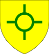
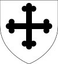

| Name | Prt. | CoA | Lifespan | Notes |
| Agnes |
|
|
1036–1042
Aged 6 |
|
| Alma |
|
|
1037
Aged 0 |
|
| Cecilia |
|
|
1040–1053
Aged 13 |
|
| Christopher III |
 |
|
1041–1093
Aged 52 |
Married Aldiva FitzToly in 1081
|
| Agnes |
|
|
1045–1046
Aged 1 |
|
| Randolph I |
 |
|
1048–1122
Aged 74 |
Wives:- Lucia Kempston (m. 1075 d. 1083)
- Margery (1077–1127)
- Christopher IV (1079–1131)
- Randolph (1080–1130)
- Lucia (1081–1095)
- Juliana Hedon (m. 1093 d. 1122)
|
| Emma |
 |
 |
1049–1102
Aged 53 |
Married Letard Fakenham in 1065
|
| Guy |
|
|
1051–1059
Aged 8 |
|
| Agnes |
 |
|
1053–1118
Aged 65 |
Married Richard Deloraine in 1067
- Richard (1075–1135)
- Emma (1076–1104)
- Elias (1080–1131)
- Avelina (1083–1140)
- Humphrey (1087–1143)
- Eunice (1088–1100)
|
| Adam |
|
|
1055–1104
Aged 49 |
Married Aldiva FitzToly in 1093
|
| John |
 |
|
1056–1108
Aged 52 |
Wives:- Margaret Traquair (m. 1087 d. 1088)
- Brigit Richmond (m. 1091 d. 1096)
- Christopher (1092–1147)
- John (1093–1142)
- Alwin (1096–1137)
|
| Margery |
 |
|
1058–1127
Aged 69 |
Married Turbert Poole in 1071
|
| Alma |
|
|
1059–1067
Aged 8 |
|
| Guy |
 |
|
1061–1110
Aged 49 |
Married Godeleva Horsforth in 1102
|
| Christina |
|
 |
1062–1113
Aged 51 |
Husbands:- Wymark Dinnington (m. 1078 d. 1082)
- Denis Hoddesdon (m. 1082 d. 1087)
|